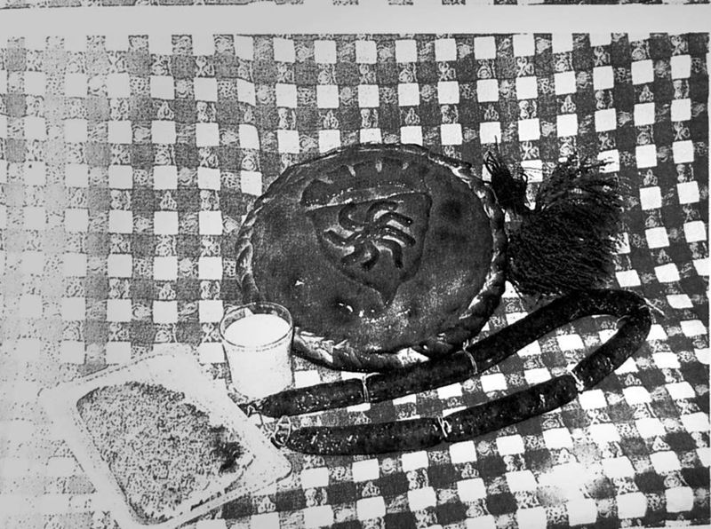

Cocina tradicional
Qué se comía en Alaejos en cada fiesta del año, de la matanza a Todos los Santos. Esta página sigue el capítulo de gastronomía de Alaejos, apuntes histórico-artísticos (1991).
En esta página (9 apartados · 8 min de lectura)
Un calendario en la mesa
En 1991, Conchi Alonso, Celestina Sánchez e Isabel Martín Sánchez escribieron el capítulo de gastronomía de Alaejos, apuntes histórico-artísticos. No es un recetario. Recorre el año y cuenta qué plato correspondía a cada fiesta y quién invitaba a quién (Alonso, Sánchez y Martín Sánchez, Alaejos, apuntes histórico-artísticos, 1991, págs. 47-48; texto usado con autorización de las autoras). Las fiestas de cada fecha se cuentan en Fiestas y tradiciones.
| Cuándo | Qué se comía | Quién y dónde |
|---|---|---|
| La matanza (por San Martín o en Navidad) | Morcillas, chorizos de bofes o «flamencos» y manteca; con los chicharrones, bollos, pastas y arrastraos | En cada casa |
| San Antón (17 de enero) | Alubiada con orejas, rabo y morro de cerdo adobados | Cena de los mozos |
| Jueves de Compadres y de Comadres | Tortilla castellana, torta y castañas pilongas | Merienda de los niños en los pinares |
| Domingo de Carnaval (Domingo Gordo) | Cocido con morcón y arroz con leche | En casa |
| San José (19 de marzo) | Rosquillas de San José | Los mozos invitan a las mozas |
| Semana Santa | Potaje; flores al molde y torrijas, con limonada | Antiguamente, potaje para los pobres en Santa María |
| San Isidro (15 de mayo) | Empanada de Alaejos y tortilla castellana | Las mozas invitan a los mozos, en el campo |
| Todos los Santos (1 de noviembre) | Buñuelos de viento, a veces rellenos de crema pastelera | En casa |
El cocido de cada día
Diez años después del libro de 1991, Alaejos, del sepia al color (2001) dedicó también un capítulo a la gastronomía. Empieza por el plato de diario: el cocido castellano, que «no hace muchos años se comía casi a diario», salvo los días de fiesta, que eran de arroz. En 2001 se había vuelto plato de fin de semana: los hijos que venían de fuera le pedían a su madre que pusiera cocido, «porque hace mucho tiempo que no lo comen». Primero se servía la sopa de fideos; después, los garbanzos de la tierra con un poco de berza, y por último la morcilla, el chorizo, el tocino, el relleno, un poco de gallina «para dar gusto» y carne de vaca, mejor de morcillo. Eran típicos también los asados de tostón y de lechazo (Caballero Morante, Alaejos, del sepia al color, 2001).
La matanza y la manteca
El año empezaba con la matanza, que llenaba la despensa para todo el año. Según las autoras, se hacía como en el resto de la región con una diferencia: la morcilla. Se elaboraba con la sangre del cerdo y con el pan y la cebolla picados el día anterior, y se condimentaba con ajos, cominos, clavillo, orégano, grasa de cerdo y pimentón. Las morcillas se cocían en la misma agua en que antes se habían cocido el zabaco, que es el estómago del cerdo, y la asadura, el corazón y los pulmones. Con la asadura se hacían los chorizos de bofes, también llamados flamencos, que acompañaban el cocido.
La receta que dio Antonio Lucas Varela en 1998 no es igual. Coincide en la sangre, el pan, la cebolla, el orégano y el pimentón, pero lleva cayena y no menciona los ajos, los cominos ni el clavillo. Su receta completa y la matanza paso a paso están en La matanza. Es probable que cada casa tuviera su fórmula.
El libro de 2001 añade cómo se iba probando la matanza. Lo primero era el hígado, en salsa en la sartén, «aún antes de que lo vea el veterinario». Por la tarde se asaban en la lumbre las collugas, y al día siguiente, antes de llenar los chorizos, se probaba el picadillo por si había que añadir algo. Antes lo sazonaban a ojo las mondongueras; en 2001 el pimentón y la sal se ponían a peso (Caballero Morante, Alaejos, del sepia al color, 2001).
La manteca era la base de los dulces caseros: bollos, pastas y los arrastraos, que se hacían con los chicharrones, lo que queda después de derretir la manteca a fuego lento.
De San Antón al Carnaval
San Antón era fiesta de mozos, que se reunían para cenar la alubiada. Las alubias se acompañaban con las orejas, el rabo y el morro del cerdo, que se habían adobado en las tinajas y secado al calor de la lumbre. El libro llama también Sanantonada a esa reunión de las pandillas (Rodríguez Carracedo, 1991, pág. 42; véase Fiestas y tradiciones).
Los dos jueves anteriores al Domingo Gordo eran los Jueves de Compadres y de Comadres. Según las autoras, sus meriendas eran sobre todo de los niños, en los pinares cercanos, con tortilla castellana, torta y castañas pilongas. Tres días después, el domingo de Carnaval, tocaba un cocido con morcón, el embutido hecho en la tripa cular del cerdo, y de postre arroz con leche con canela y ralladura de limón.
San José y la Semana Santa
El 19 de marzo, San José, los mozos invitaban a las mozas a rosquillas de San José, bañadas en merengue, con una copa de vino dulce; ellas les correspondían con la empanada el día de San Isidro (véase Fiestas y tradiciones). En Semana Santa se daba antiguamente potaje a los pobres en la iglesia de Santa María. Los postres eran las flores hechas con molde, una masa como de crepe frita y espolvoreada de azúcar, y las torrijas, rebanadas de pan empapadas en leche y bañadas en miel. Se acompañaban con un trago de limonada. Las flores eran también el dulce del Carnaval (Rodríguez Carracedo, 1991, pág. 42). En 2001 la mesa de Semana Santa seguía siendo de potaje, bacalao y huevos rellenos, con limonada, y después de los oficios se tomaba un refrigerio «que no quebranta el ayuno»: flores, leche frita, torrijas y a veces rosquillas fritas en aceite, las Cagadas de Gato (Caballero Morante, Alaejos, del sepia al color, 2001).
El libro de 2001 explica quién daba aquel potaje: la cofradía del Cristo de la Salud, cuya misión principal era socorrer a los pobres. El Jueves Santo los invitaba a comer potaje, e incluso a la ceremonia del lavatorio; a mediodía los chicos tocaban las carracas gritando «A mediodía, a comer potaje de Santa María», o de San Pedro. «Hasta hace pocos años» se mantuvo la comida de pobres; en 2001 comían los 24 hermanos con el sacerdote. La cofradía del Cristo de la Caridad, por su parte, daba un cocido a los necesitados el Domingo de Resurrección, y lo sirvió por última vez en 1966 (véase Cuaresma y Semana Santa).
San Isidro: la empanada de Alaejos


Por San Isidro se salía al campo y eran las mozas quienes invitaban a los mozos. Llevaban la empanada de Alaejos, hecha de panecillo dulce y rellena de embutido. La fotografía del libro la muestra redonda, con el borde trenzado y un dibujo en relieve en la tapa. La acompañaba la tortilla castellana «al estilo de nuestras abuelas». Se montaban las claras, se añadían las yemas, la patata y la cebolla en crudo, y se freía sobre las brasas de la lumbre.
El libro de 2001 dice algo más de la empanada: la masa se hace con leche de oveja y aceite, y se rellena de «cachos» de la matanza, chorizo y lomo de la lata, a quien le quede en esas fechas, «aunque se suele reservar algo para la ocasión» (Caballero Morante, Alaejos, del sepia al color, 2001).
Navidad: berza, gallo y buches
La cena de Navidad que recuerda el libro de 2001 empezaba con berza o cardo, seguía con bacalao y con el gallo de corral, «como dicen ahora, porque antes era lo que había», y se desengrasaba con granada. Terminaba con el cascajo, los frutos secos, y con los buches, higos secos rellenos de nuez, avellana o almendra, un poco de turrón blando y duro y, en algunas casas, sidra o champán (Caballero Morante, Alaejos, del sepia al color, 2001).
Todos los Santos
El año gastronómico terminaba con Todos los Santos y sus buñuelos de viento, a veces rellenos de crema pastelera. El capítulo de folklore añade los huesos de santo y las castañas asadas o cocidas (Rodríguez Carracedo, 1991, pág. 41).
Para seguir leyendo
- Conchi Alonso, Celestina Sánchez e Isabel Martín Sánchez, «Gastronomía», en José Ojeda Nieto, Alaejos, apuntes histórico-artísticos (Valladolid, Diputación, 1991), págs. 47-48. Se usa con autorización de las autoras; la fotografía procede del mismo libro.
- Francisco José Rodríguez Carracedo, «Folklore», en el mismo libro, págs. 41-46.
- Armando Caballero Morante (recop.), Alaejos… del sepia al color (Diputación de Valladolid, 2001), capítulo «Gastronomía». Se cita con autorización.
- La matanza paso a paso y sus recetas, en La matanza; el vino, en El vino de Alaejos; las palabras de la cocina, en el Vocabulario de Alaejos.
Cómo citar esta página
Amigos de Alaejos, «Cocina tradicional», https://www.amigosdealaejos.org/historia-del-pueblo/cocina-tradicional/ (revisión del 18/11/2026).